The proxy and its setup page #
On this page
- In plain words
- What it listens on
- The setup page
- The menu
- What's configured
- Set up more
- Advanced, and saved settings that wait for a restart
- Charts and live figures
- What you can do from the Configure tabs
- Filter the charts and cards
- Provider health
- Alerts and forecasts
- Compare two ranges
- People and teams
- MCP hub (experimental)
- Protect the setup page with a password
- Settings you may want
- Prompt caching
- Model aliases
- Fallbacks
- Auto mode at the proxy
- Set up auto mode
- Copilot Auto
- See what auto chose
- Guards
- Keeping the cache useful
- Images and browser snapshots
- Seeing how the cache is doing
- Seeing cost per session
- Seeing what it saves
- Prices for each model
- Daily budgets
- Limits and hosts (restart required)
- Using it from another machine
- Connect the harness to a proxy
- Verified and unverified proxies
- Check the cache yourself
- Other useful commands
maple-proxy is the program that holds your sign-ins and talks to the models. The agent uses it, and so can
any other tool that speaks the OpenAI or Anthropic API. Start it with:
maple-proxy serveIt stays in the foreground. Add --logs=true to watch requests, --logs=/path/to.log to keep a record, or
--logs=stdout when something else (systemd, launchd) is capturing output; See what auto chose
explains a log line. To keep it running in the
background, see Keep it running in the background.
In plain words #
- What it is. The proxy is the one program that holds your sign-ins (GitHub Copilot, Claude, your own model servers) and talks to the models. Maple Harness uses it, and so can Claude Code, OpenCode or any tool that speaks the OpenAI or Anthropic API.
- Why you want it. One place for your accounts and models; when one account runs out or is down, requests move to the next one you chose; and you see what every tool spent.
- How you use it. Maple Harness starts it for you. Open its setup page at
http://127.0.0.1:11539to sign in, add a model server or change a setting: Providers for accounts, Models & routing for whatautomeans and the fallbacks, Security & access for a password. Nothing to edit by hand.
What it listens on #
| Address | What it is | Who may use it |
|---|---|---|
127.0.0.1:11539 | The setup page | This machine only. It refuses to listen anywhere else |
127.0.0.1:11535 | OpenAI-compatible API (/v1) | This machine; other machines only with an access token |
127.0.0.1:11537 | Anthropic-compatible API | This machine; other machines only with an access token |
The addresses and ports are in the server: section of config.yaml. The proxy picks up changes to its
providers and settings without a restart.
The setup page #
The setup page is the proxy's control panel, in your browser. Open http://127.0.0.1:11539 on the machine running
the proxy. Nothing to install, and it only answers on this machine.
- Watch tells you what is happening: how many requests, what they cost, how the cache and each provider are doing.
- Configure is where you change things: sign in to an account, add a model server, choose what
automeans, set a budget, protect the page with a password. - What's configured, on the first tab, says in one list what is on, what is off and what needs a look.
- Find a setting, the box beside the menu, finds any setting by a word ("port", "budget", "Okta") and takes you to it.
If you are one person on one computer, that is all you will see. Sharing with a team, hubs, single sign-on and monitoring stay out of the menu until you choose them on Set up more.


The menu #
The tabs are in two groups. The address keeps the tab you are on (#tab-usage), so a tab can be bookmarked, and the
arrow keys move between tabs.
| Group | Tab | What it holds |
|---|---|---|
| Watch | Overview | Live tiles (requests per second, in flight, today's requests and AI units, the cache hit rate, failures in the last hour), a live chart of the last minute, each request as it finishes, a few charts of the history, the Savings card and What's configured |
| Watch | Usage | Requests, tokens, AI units or the estimated list-price cost over time, split by model, provider, tool, token and more; the share of each; when requests arrive (hour by day); a table of totals; and the Sessions card |
| Watch | Costs & budgets | AI units and the estimated cost per day, today's use of each budget, monthly dollar budgets, Check against Anthropic's bill, the Alerts card, and Compare two ranges |
| Watch | Cache | The hit rate over time, tokens read from and written to the cache, what the cache saved, and the Cache card with why misses happened |
| Watch | Health | Time to answer and to the first output over time (median and 95th percentile), failures by class, and the Health card |
| Configure | Providers | Your account sign-ins (GitHub Copilot, Anthropic and the others), the providers and model servers, Find local models |
| Configure | Models & routing | Auto mode and its report (where auto sent requests), the Proxy settings card (aliases, fallbacks, guards, caching, budgets, limits), and Search by meaning |
| Configure | People & teams | Once you share the proxy: people, teams, their tokens and budgets, and who cannot connect yet. See Teams |
| Configure | Hubs & chaining | Once this proxy uses a hub or serves proxies below it: the hub map, connecting, chain tokens and the Chained proxies card. See Chain proxies |
| Configure | Single sign-on | Once set up: the wizard and recent sign-ins. See Single sign-on |
| Configure | Monitoring | Once set up: Prometheus, OpenTelemetry, audit lines, alert rules and webhooks. See Metrics and telemetry |
| Configure | MCP hub | Once set up: the hub and its servers. See MCP hub |
| Configure | Data & storage | Where the data lives, the Usage data card (location, retention, analytics files, export, removing old days), DuckDB queries to copy, and central storage for several replicas |
| Configure | Security & access | Remote access (devices and tokens), Protect this page (the password), and Recent activity |
| Configure | Advanced | Every setting the proxy has, grouped by tab and searchable, with a form for the ones that have no card of their own; and the raw configuration |
| Configure | Set up more | Cards to start sharing with a team, hubs and chaining, single sign-on, monitoring, several replicas and the MCP hub |
On one computer used by one person, the page stays simple: People & teams, Hubs & chaining, Single sign-on, Monitoring and MCP hub are not in the menu until they are set up, or until you choose one on Set up more (it then stays in the menu on that browser until you hide it). A link to one of them always opens it. On a first run, before any request has gone through, Overview shows Get started instead of charts: your account (sign in to a provider) and Auto mode, the same two steps as always.
Links from before 2.2 keep working: #tab-settings opens Providers, #tab-auto opens Models & routing, and a link to
any card opens the tab it is on now.


On a phone, or any narrow window, the menu is one Menu button that opens the full list and closes when you choose a tab. It works with the keyboard (Up and Down move, Escape closes) and with a screen reader.
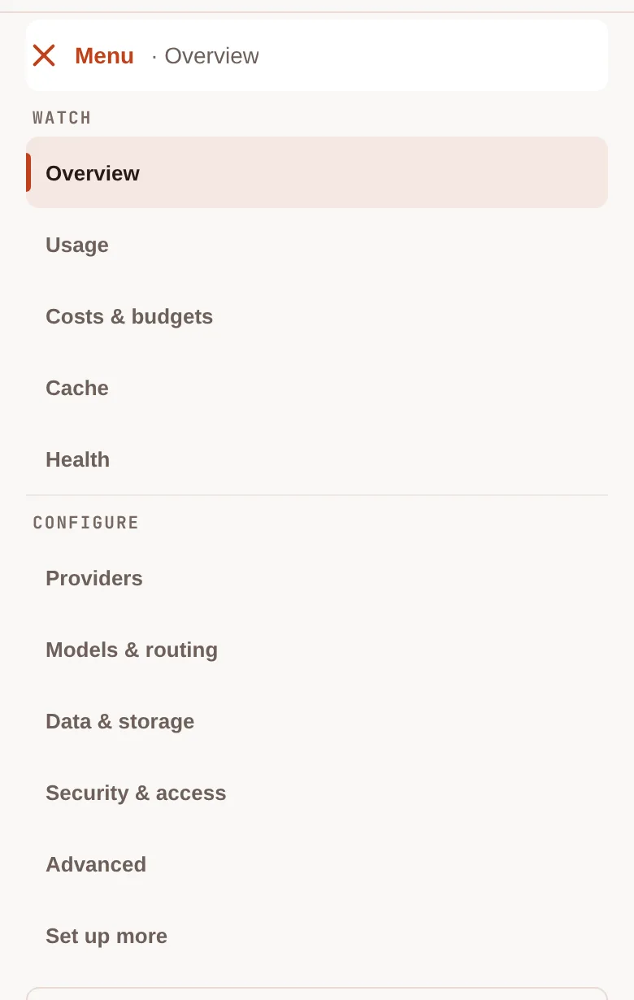
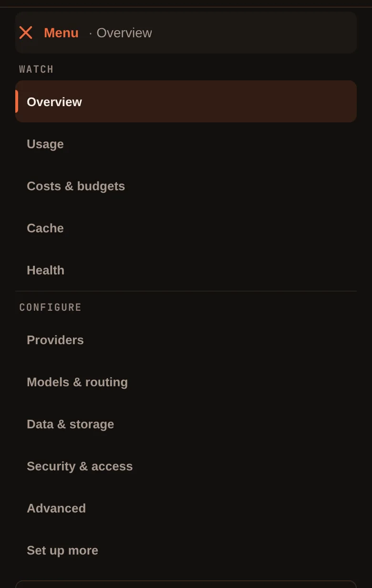
What's configured #
At the bottom of the Overview, What's configured lists the basics, each on, off or needs attention, with a link to where it is set: providers, auto mode, the usage log, budgets and alerts, search by meaning, remote control and the page password. Features you set up (sharing, hubs, single sign-on, monitoring, central storage, the MCP hub) follow. The rest is one line, "Not set up: ...", with a link to Set up more. Off is never shown as a problem.


Set up more #
Set up more is where the features one person does not need begin: Share this proxy with a team, Connect to a hub, or serve other proxies, Single sign-on for admins, Monitoring and alert webhooks, Several replicas (central storage) and MCP hub (experimental). Each card says whether it is on and opens its own tab, with a step-by-step wizard where there is one.
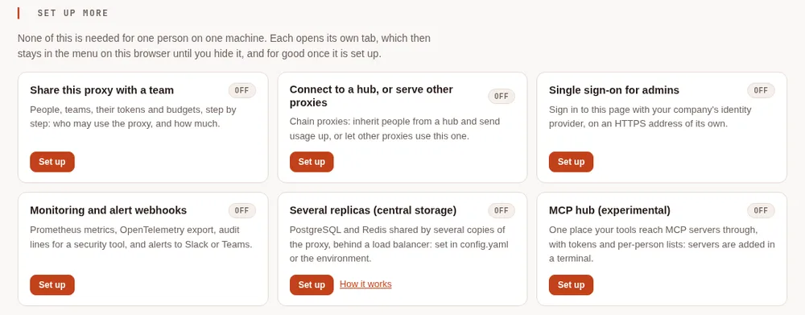
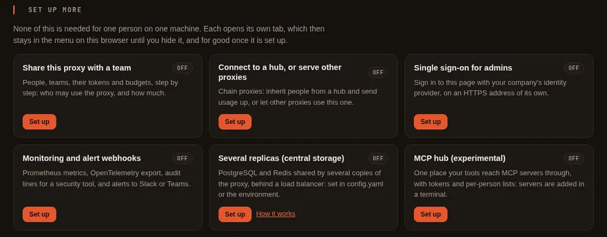
Advanced, and saved settings that wait for a restart #
Advanced shows every setting the proxy has, grouped by tab, with a filter box. The ones without a card of their
own (guards, caching, alert rules, where the proxy listens and its limits, trusted load balancers, chaining intervals,
log format and level, image limits) can be changed there. Each says when it applies (at once, at the next request, or
after a restart), its default, whether an environment variable overrides it, and links to its documentation.
Check shows what would change; Save saves only the settings you changed, with the same checks the proxy reads
config.yaml with, and keeps your comments. A refused value is explained next to it. The other settings are listed
under Set elsewhere, with where to change them. Secrets are never written there. The raw configuration editor is
at the bottom of the tab.
Advanced can change the port of the model addresses, or move them back to this machine, but not onto the network: that is done on People & teams (Share this proxy), which first checks that a token exists.


When you save a setting that is read only when the proxy starts, a banner on every tab names it and says how to restart. It goes away once the proxy has restarted.
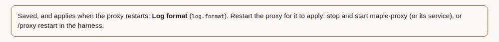
Charts and live figures #
Every chart says whether its figures are measured or estimated, prints the notes the proxy gives with them (how many requests and daily files it read, and what the figures cannot show), and has a Table button that shows every number. Hover over a chart, or focus it and use the arrow keys, to read each point; click a legend entry to hide or show that series. Motion (charts drawing in, numbers counting up, tabs sliding in) is off when your system asks for reduced motion.
The live parts (the tiles, the last-minute chart and the list of requests) update once a second. They carry counts and labels only (time, the model asked for and the one that answered, the account, the person, the tool, the status and the duration), never a prompt or an answer. With several replicas sharing their state, the list includes the other replicas' requests within about ten seconds, and "in flight" counts this replica's.
History comes from the usage log, read through the proxy's own summary of each day (in central mode, the shared store), so a year of a team's usage still draws quickly. The page never queries a lake or any copy you make elsewhere: the Data & storage tab has DuckDB commands to copy for that.
Reading the numbers #
In plain words: every number on the page says which time it covers, and two cards that cover the same time and filter show the same number. "Today" always means since midnight where the proxy runs.
The details:
- Today is the proxy's local day, since midnight, on every card: the tiles, the Savings card and the Cache card. A filtered tile asks the usage log for the same span. The history charts count days in UTC and say so.
- Requests today counts every request since midnight, as the usage log does: failed ones, the proxy's own cache-warming requests, answers from the response cache (which never reached a provider), and requests for a model no provider here serves included.
- The history ranges (7, 30 and 90 days, a year) count whole days from midnight in the proxy's time zone, so the newest day of each is exactly "today"; a custom range's days are UTC days, and the charts' days too (each says so).
- With a filter, every tile that shows requests, AI units, the hit rate or failures follows the whole filter; requests per second and in flight are the live view's, which follows person, team, provider and account only. The line above the tiles says which.
- Fallbacks counts every request tried on a fallback, answered or not. On the outcome chart each request has one outcome, an error first: a fallback that also failed is an error there, and the "fallback, answered" series is the fallbacks that answered.
- A model the provider lists but will not serve to this client (GitHub Copilot's "not available for integrator") fails with the reason model not offered to this client, and the model list marks it for some hours, so it does not look like random errors.
- The Cache card's "≈ AI units" for reads and writes uses the same prices the Savings card values tokens with.
- The range buttons have Today (since midnight, local time), the same span as the tiles and the Savings card.
- Failed, last hour is read from the usage log, so a restart of the proxy never lowers it.
- The Savings card's headline is the estimate itself: what the prompt cache and trimming avoided, less Maple's own costs, beside what you spent (measured) and what you would have spent without them, which is exactly the two added up. The rows under it are the same figures.
- AI units today and the Savings card's "You spent ... today" are the same sum: every request's AI units as its
provider reported them, a failed request's included when it reported some.
maple-proxy usage querygives the same figure for the same span (for example--sincewith today's local midnight). - The history charts and the filtered cards say how many requests they read and when ("as of ..."). They are drawn again when new requests arrive, so a chart and a card read for the same filter show the same count.
- The list of requests as they finish shows the newest 50 since the proxy started, of any day; a request from before midnight shows its date.
- A model whose cache reads have no estimate yet is named on the Savings card under Not valued yet, with the reason, never shown as a saving of 0.
- Printing the Overview, or saving it as a PDF from the browser, prints every chart as drawn, in the light theme, without the buttons.
What you can do from the Configure tabs #
- Sign in to GitHub Copilot (a browser flow) or save an Anthropic API key, on Providers. See Sign in.
- Add model servers on Providers: pick the type (Ollama, LM Studio, oMLX, Lemonade, Unsloth, or any OpenAI-compatible server), press Detect models, and save. See Connect a model server.
- See your Copilot allowance: the plan, how many chats are left, and when they reset.
- Manage remote access on Security & access: switch remote control on, pair a phone with a short code or a link, choose what each device may do, choose the folders a phone may start sessions in, and revoke a device at any time. See Control it from your phone.
- Read recent activity on Security & access: sign-ins, token changes and remote switches.
Keys and sign-ins you enter here are stored in your system keyring, not in the configuration file.
When the proxy runs as several replicas whose settings come from files (see Kubernetes), the Configure tabs say they are read-only and their controls are off; usage and status are still shown.
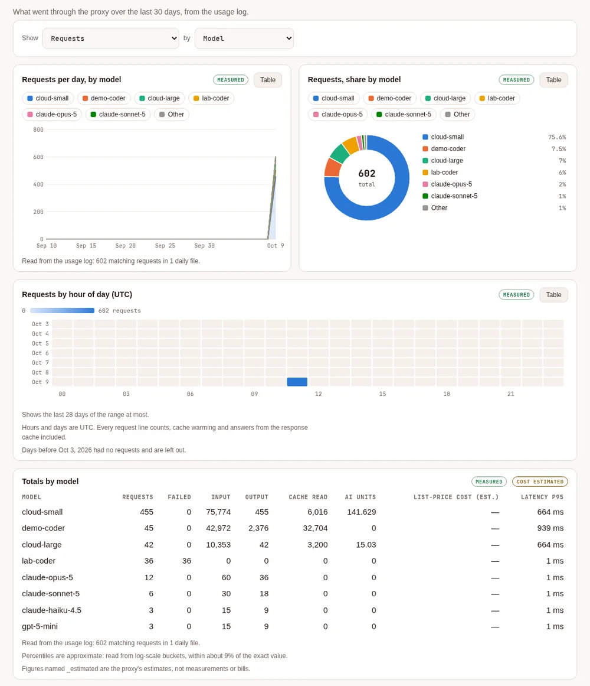
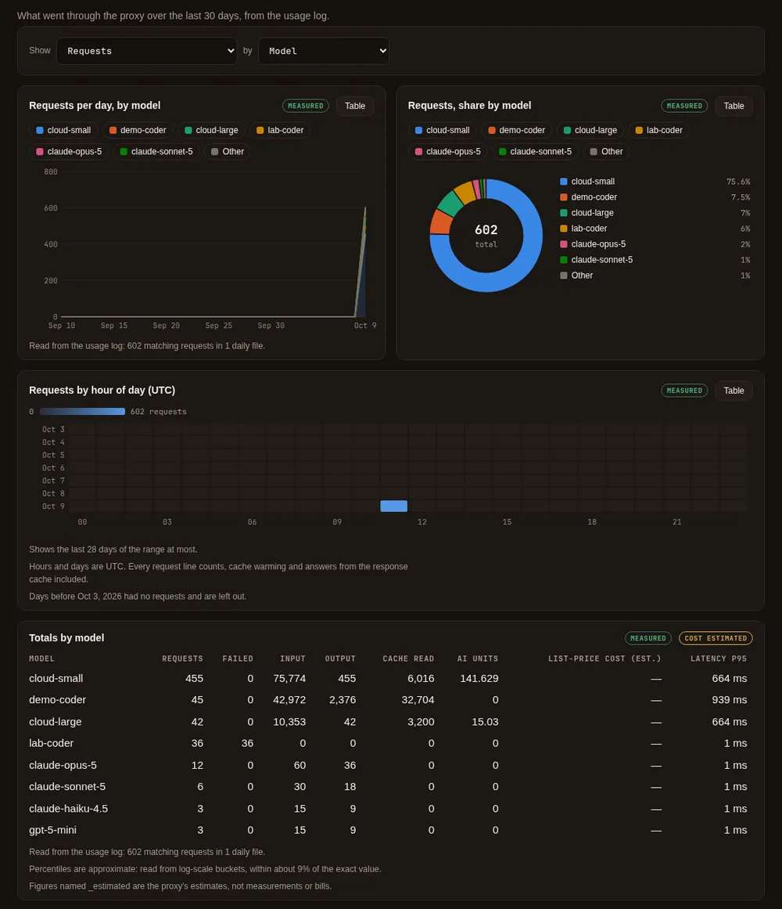
Filter the charts and cards #
Above the data tabs, pick a time range: Live (the default), 7, 30 or 90 days, a year, or Custom for a range of UTC days. With Live, the cards show the proxy's own figures since it started, exactly as before, and the charts show the last 30 days.
More filters opens the rest: provider, account, model, token, agent, outcome, error class and auto weight.
Provider is the kind of service that answered (anthropic, github-copilot, openai-compatible...), every
account of it; Account is one configured account (two Copilot accounts are two accounts). Provider appears once
two providers have requests, Account once a provider has two accounts, and person and team once your usage log holds
more than one of them. The Model list names the account beside each model, such as gpt-5-mini (github-copilot);
a model two accounts served is listed once for each, and picking one filters by that model and that account. The
live view, the requests as they finish and today's figures follow the person, team, provider and account filters. Any filter makes the cards read the usage
log instead, and each card and chart then says how many requests matched and prints notes on what its figures
cannot show, such as requests recorded before a column existed.
The filters live in the page's address, so a filtered view can be bookmarked or kept in a tab, and the browser's
back button steps through the filters you chose. The address uses the same filters as maple-proxy usage query:
?last=7d&model=claude-sonnet-5 on the page means the same as usage query --last 7d --model claude-sonnet-5.
Filtering needs the usage log; with the log off, the bar says so and the cards show their own figures.
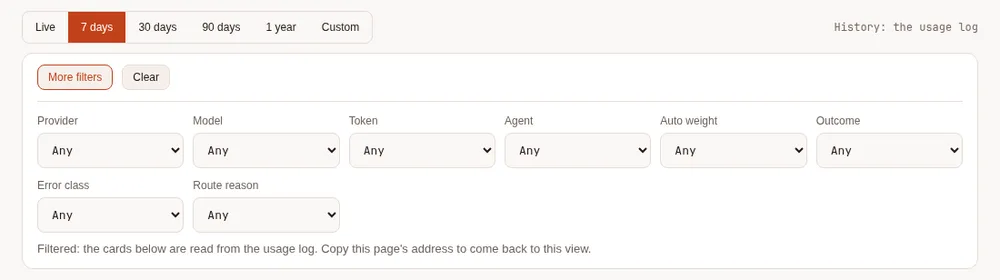
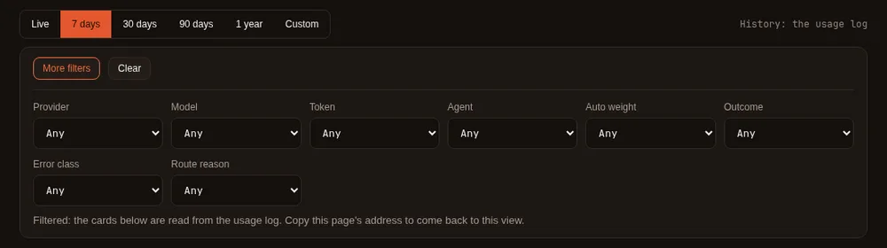
Provider health #
On the Health tab, the charts show the time to an answer and to the first output per day (the median, with the
95th percentile as a band), failures by class, and the share of each model's requests that failed. The Health card lists each provider and model that has answered through this proxy since it started: its
state (healthy, degraded or demoted), the error rate, the 95th-percentile time to an answer and to the first token,
and when and why its state last changed. It is measured on your own traffic and compared with each model's own
usual figures, so a slow local model is not called unhealthy for being slow. maple-proxy health shows the same.
Health only watches unless you turn on Try a demoted model after the other configured candidates on the card
(health_failover: on). Then a demoted model moves behind the others already in that request's fallback list;
nothing is added, and it is tried again once its hold is over.


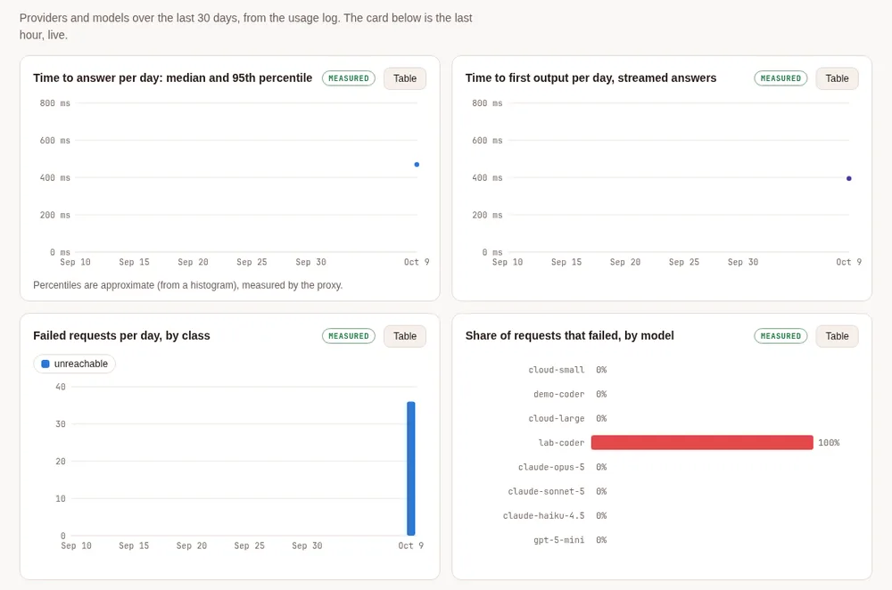
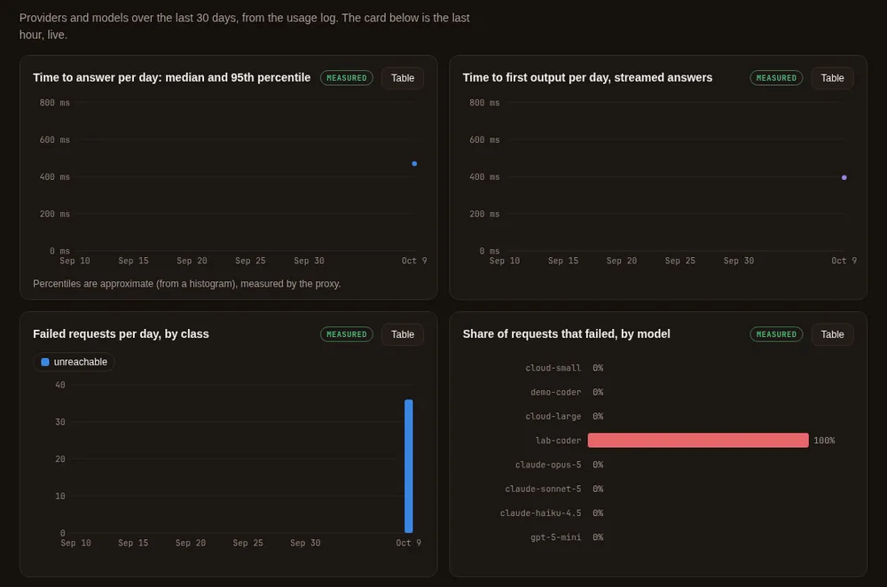
Alerts and forecasts #
On the Costs & budgets tab, the charts show AI units and the estimated list-price cost per day (with a line at an alert amount you set) and today's use of each budget, with a typical day once there are three days of usage. The Alerts card warns when a budget reaches 80% and 100% (the default), and, if you set them under Alert rules (on the Monitoring tab, with the webhooks; Costs & budgets links there), when a provider's own allowance passes a share, today's AI units or estimated cost pass an amount, or the error rate in the last hour passes a level. A banner at the top of the page appears only while an alert is in force. Alerts only warn: budgets are what stop spending.
With at least three days of usage, each budget shows what a typical day uses, and Forecast provider quotas estimates when an allowance runs out at your recent rate. Every forecast is labelled estimated, with its range and the days it is based on.
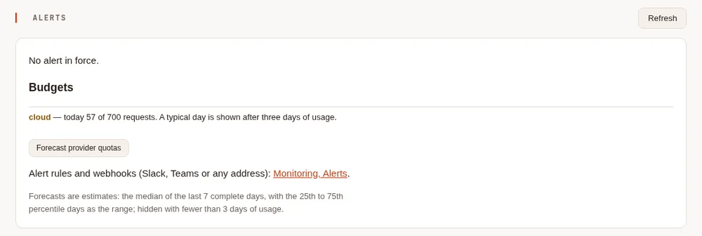
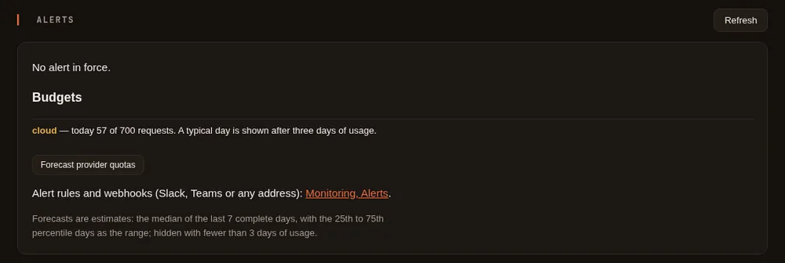
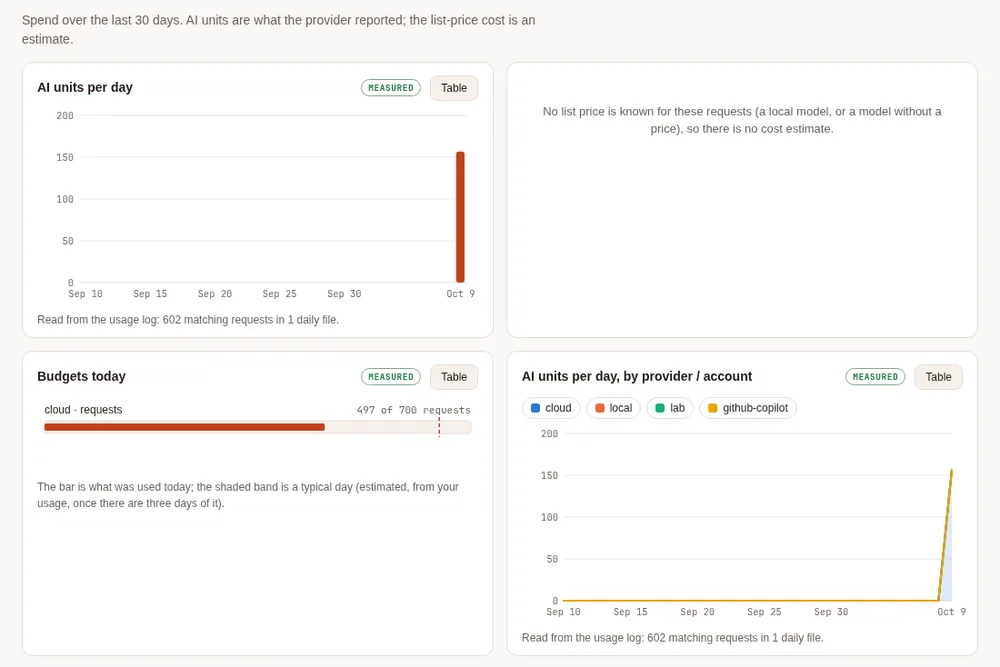
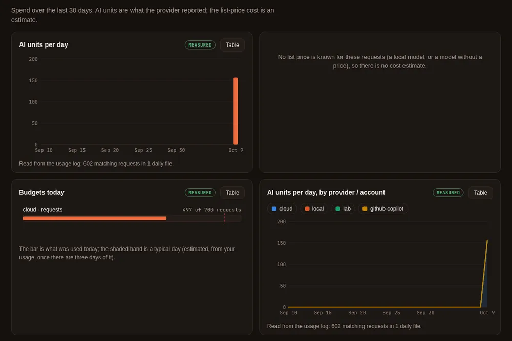
Compare two ranges #
On the Costs & budgets tab, Compare two ranges sets the days before and after a change you made and compares
cost and tokens per request between them, on your own traffic, narrowed by the filter bar. Requests are compared
like for like (the same kind of client, model and size of work), and the answer refuses rather than guesses when
there is too little data or the work changed too much. It is measured and observational, not a controlled test;
for a causal answer, run maple-harness bench. maple-proxy usage compare does the same in a terminal.
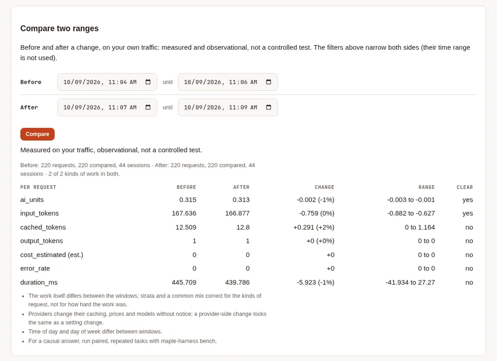
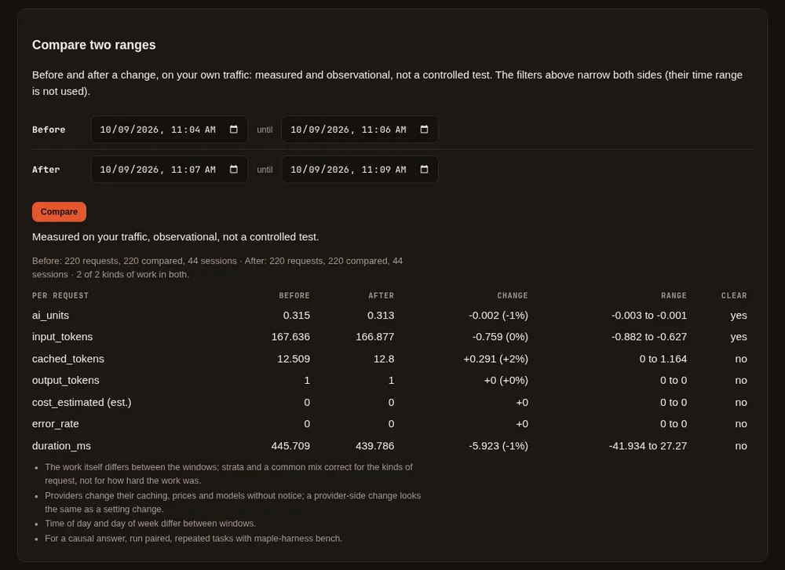
People and teams #
To share one proxy with other people, open Set up more > Share this proxy with a team and add a person. The
People & teams tab then stays in the menu, with charts of AI units by person and requests by team, each budget's use today and this month, and
the People card: each person, their team, their tokens (by label, never the token itself), their budget
used and left today and this month, and what they spent in the filter bar's range. From the card you can add people
and teams, tie a token to a person, set budgets in AI units, choose which accounts serve a person or a team, and
choose the default accounts for everyone else. maple-proxy people does the same in a terminal.
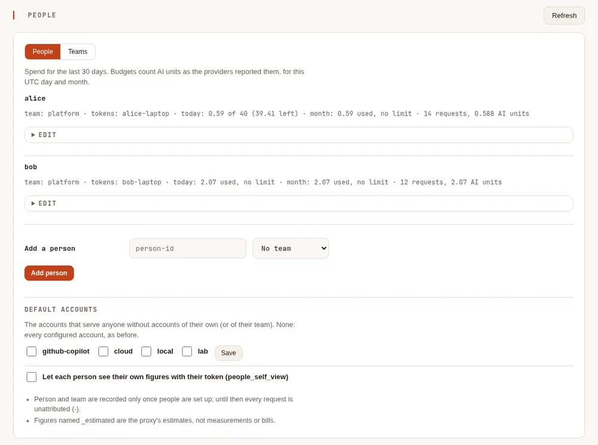
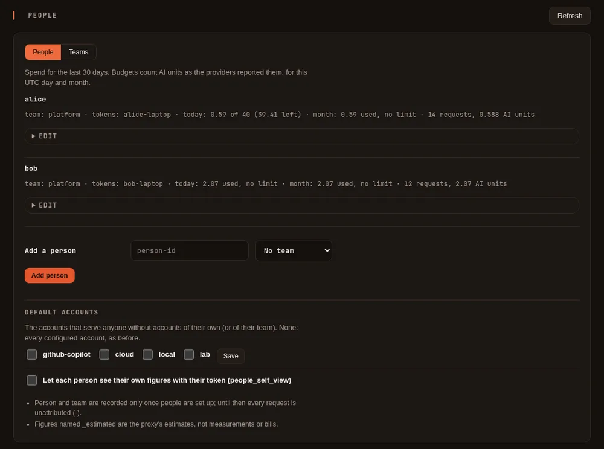
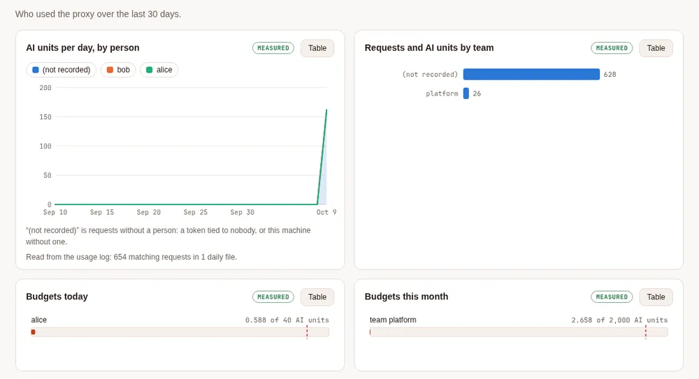
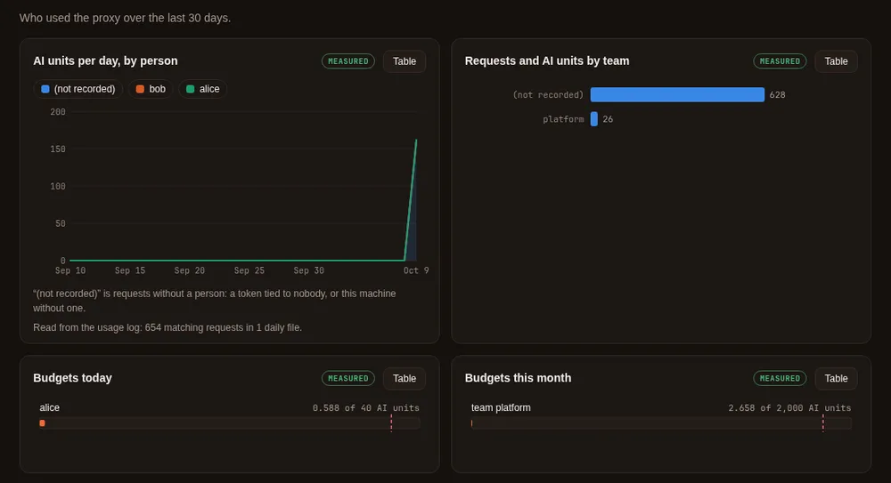
MCP hub (experimental) #
Once mcp_hub: is set up in config.yaml (or with maple-proxy mcp-hub add), the MCP hub tab shows whether
the hub is on, its address, and each server with its state and tools. You can switch the hub or a server on and off
there. Servers cannot be added from the page: a server can be a program the proxy runs, so they are added in a
terminal or in config.yaml.


Protect the setup page with a password #
By default the setup page has no password: any program or browser on this computer can open it and change what it manages. To require one, open Security & access > Protect this page, type a password twice (at least 8 characters) and press Turn on. The browser you did it in stays signed in for 30 days; any other browser shows a sign-in form.
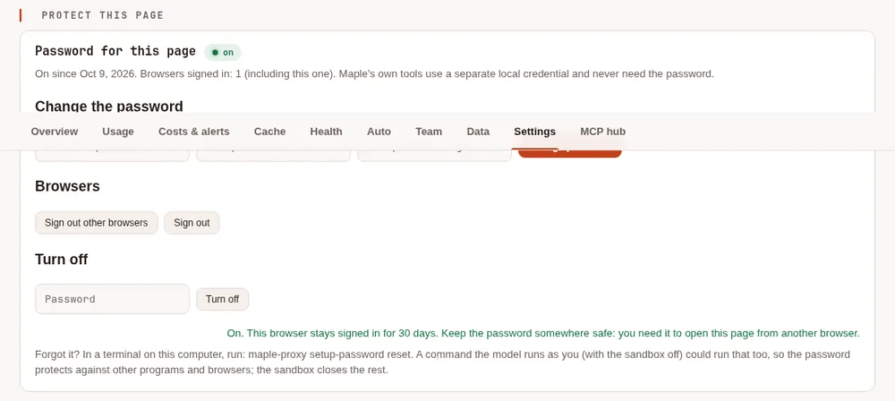
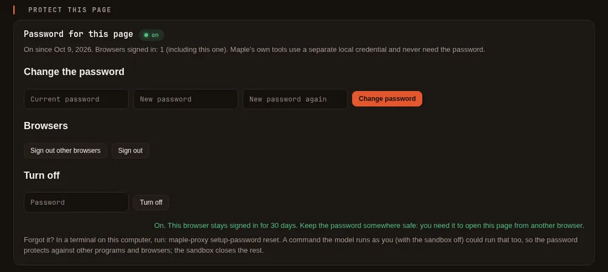
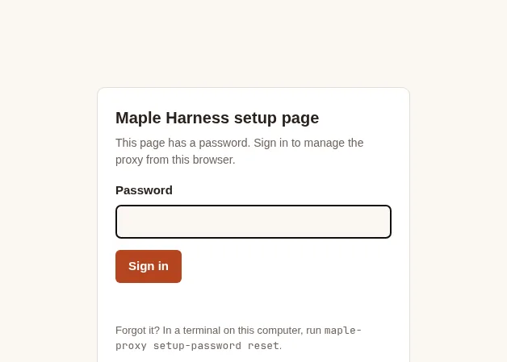
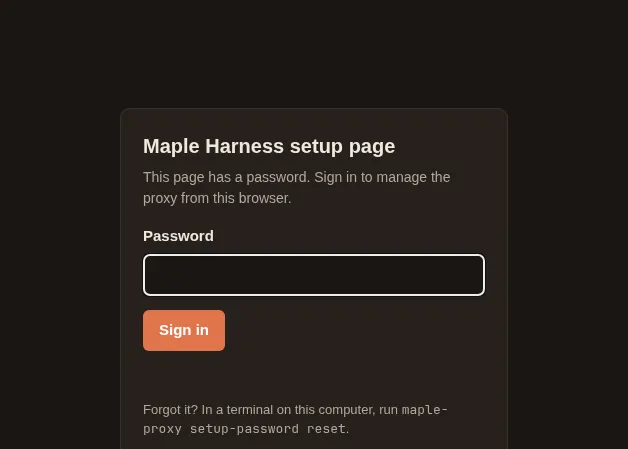
- The Maple Harness commands keep working (
maple-proxy savings,cache,auth,maple-harness auth,savings,doctor, the status bar): they use a separate credential that the proxy keeps in your secret store, and they never need the password. - Change it on the same card; it needs the current password and signs out every other browser.
- Sign out other browsers ends every session but yours. Turn off asks for the password and a confirmation.
- The password itself is never stored, only a slow, salted hash of it, in the Maple Harness config folder.
From a terminal, as the same user:
maple-proxy setup-password status # on or off, and how many browsers are signed in
maple-proxy setup-password set # set or change it (asked twice, not shown); signs every browser out
maple-proxy setup-password reset # forgot it? removes it, so the page is open againA running proxy picks these up at once, with no restart.
What it protects against: other programs and other people's browsers on this computer. It does not protect against
something running as you that can open a terminal: that could run setup-password reset. That includes a command the
model runs while the sandbox is off; with the sandbox on, model commands can neither reach the page nor read the
credential those commands use. See Security.
Settings you may want #
Everything below is a card under Proxy settings, on the setup page's Models & routing tab (the settings without a card are on Advanced). Each control has a one-line explanation and a link back here. You do not need to edit any file.
When you change something, nothing is written yet. Press Review changes to see exactly what will change in
config.yaml, then Save settings, or Revert to throw the edits away. The page checks every value with
the same rules the proxy uses when it starts, and points at the field that is wrong. Saved settings apply to
the very next request, with no restart, except the ones marked restart required.
Prompt caching #
Long conversations resend the same beginning on every turn, and providers that cache charge much less for the part
they have already seen. The Caching card has a switch per provider, shown only where it can be controlled
(Claude through the Anthropic API or through Copilot); it is on by default. Keys: prompt_cache,
prompt_cache_key and the optional cache_warming. See Caching.
Model aliases #
An alias is a short, fixed name for a model, so a tool can ask for local or cloud and you can change what that
means later without touching the tool. Set them on the Model aliases card, or with model_aliases and a model's
own alias in the file. See Providers and models.
Fallbacks #
A fallback tells the proxy what to try when a model cannot answer: its account is out of chats or credit, the
backend is overloaded or unreachable, or it answers that it does not serve that model (from 2.1.2). model_fallbacks lists other models to try for a model;
provider_fallbacks sends one account's requests to another account, for example a second Copilot account, then
Anthropic, then a local model. <provider id>/<model> names one account's copy of a model. A fallback happens only
before any output is sent, never for bad credentials or malformed requests, and nothing falls back unless you add a
rule. Responses from a fallback carry X-Maple-Served-By. See Fallbacks, and
adding a second GitHub Copilot or Anthropic account to set one up.
Auto mode at the proxy #
The proxy has four built-in model names that choose the model for you. Any tool that talks to the proxy can ask for them:
| Name | What answers |
|---|---|
auto | The proxy looks at each request and sends it to the heavy, medium or light model below |
auto-heavy | The model for planning, diagnosing and deciding |
auto-medium | The model for ordinary work already under way |
auto-light | The model for short side jobs, such as a summary |
Each weight is one model plus the models to try after it when it cannot answer, like any fallback.
Budgets, the "out of quota, tried last" rule and provider_fallbacks apply to them as to any other model.
- Defaults. With nothing configured, the proxy takes the first provider in
config.yamlwhose models carry a ranking (GitHub Copilot ranks its models; for other servers addcategory: powerful,versatileorlightweightto a model) and uses that provider's own ranking, the same way Maple Harness's/model autodoes: the best model of the matching category, then two more from the same provider as fallbacks. The defaults never mix providers. Models matching*-codex*are not chosen by default;auto_avoidchanges that list ([]turns it off). With no ranked provider there are no defaults, and the names are not listed until you choose models. - Choose them yourself on the setup page's Auto mode card: for each weight, a model and an optional list of fallbacks. See Set up auto mode. Copilot Auto can be chosen for any weight.
- Your own names win. If
model_aliases(or a provider's model) already has the nameautoorauto-heavy, it keeps meaning exactly what you set, and the built-in one with that name is not listed. - See what happened. Every answer says which name a request went to and which model answered: see See what auto chose.
The proxy weighs a request from what the request itself contains, so it cannot know what the tool intended. Maple
Harness weighs each message itself: with harness.auto_model_resolution: proxy it asks for auto-heavy,
auto-medium or auto-light (or your own names, with harness.auto_model_map) and the proxy decides which model
each means. maple-harness doctor checks that the proxy serves those names. See
Harness settings and Automatic choice.
Set up auto mode #
Open the setup page (http://127.0.0.1:11539) open Models & routing and choose Auto mode in the row of links at the top of the tab. With
nothing set, each weight shows Use defaults with the model it uses, the fallbacks under Then try (defaults),
and a preview of where a request goes. The note above the weights names the provider the defaults come from and the
models not chosen by default.


- To change a weight, choose a model from its dropdown. It lists every model the proxy serves, with its provider
and ranking, and each Copilot account's Copilot Auto, as
github-copilot/auto (Copilot Auto: Copilot picks). - To choose the fallbacks yourself, pick them one by one from Choose your own fallbacks…. The arrows reorder them, ✕ removes one, and Default fallbacks goes back to the defaults.
- Check the preview under the weight, then Save. "Saved. The proxy is using it now." means the next request uses it; nothing restarts.
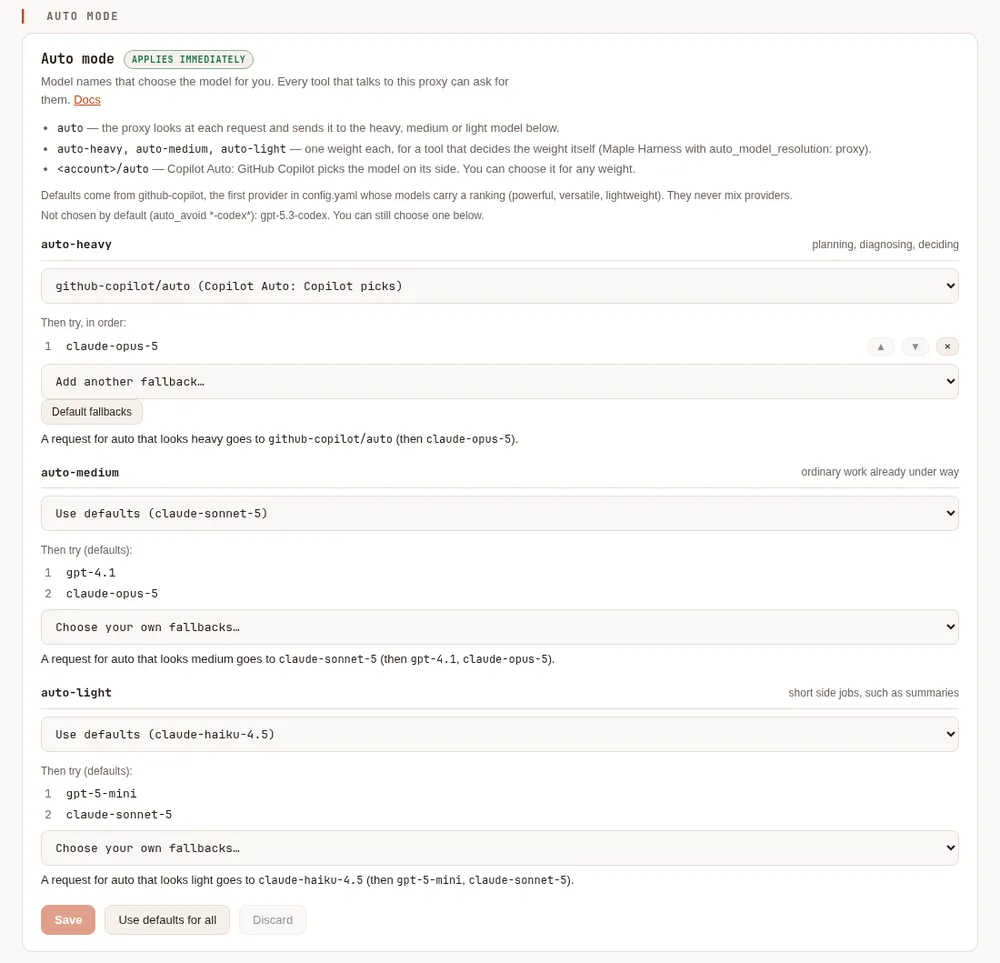
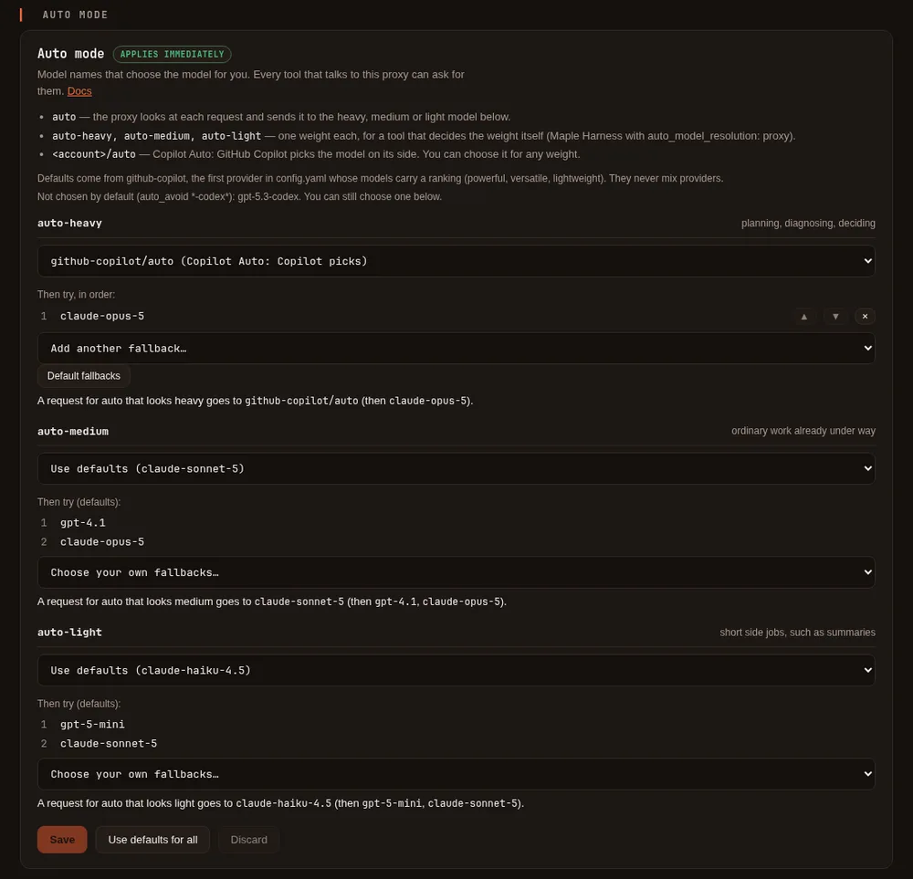
Use defaults for all clears every weight (then Save), and Discard drops changes you have not saved. If the
Proxy settings card has unsaved changes, save or discard them first. The card writes ordinary model_aliases
and model_fallbacks entries to config.yaml, keeping its comments. After the save above, the file holds:
model_aliases:
auto-heavy: github-copilot/auto
model_fallbacks:
auto-heavy:
- claude-opus-5The same entries written by hand work, and the card shows them. A weight with no alias keeps its default model; fallbacks given for it replace the default fallbacks.
Copilot Auto #
GitHub Copilot's own automatic mode, where Copilot picks the model for each request, is listed as a model of each
Copilot account: github-copilot/auto, when your account offers it. It never takes the plain name auto, which is
the proxy's own auto mode (or your alias of that name). You can choose it in two ways:
- As the model. Ask for
github-copilot/autoby name: in Maple Harness with/model github-copilot/auto, or in any other tool as its model name. It also works in model aliases, fallbacks and budgets like any other model. - As the model for a weight. On the Auto mode card, choose
github-copilot/auto (Copilot Auto: Copilot picks)for a weight. A request forautojudged to be that weight, or a request for that weight by name, then goes to Copilot Auto, and its fallbacks apply when it cannot answer.
See Copilot Auto for how it differs from Maple's auto.
What it costs, and how the Savings card values it. Copilot bills a request through Copilot Auto at 0.9 times the same model asked for by name (its 10% discount, confirmed on real requests). The Savings card keeps the two apart, as "gpt-5.3-codex" and "gpt-5.3-codex via Copilot Auto", and values each with the other's prices at once when only one of them is known yet: Auto requests at 0.9 times the by-name prices, requests by name at the Auto prices without the discount. The price list and the summary say when it does. See Prices for each model.
See what auto chose #
Four places tell you where each request went and which model answered.
The auto report. On the setup page, the Models & routing tab shows, above the Auto mode card, where auto sent requests (by weight and the model that
answered) and what happened after each choice: how often the request failed, fell back to another model, was sent
again within a minute, or was the last before the person switched model. It is measured on your traffic and
observational: what happened after each choice, not what another model would have done. maple-proxy usage
auto-report prints the same in a terminal.
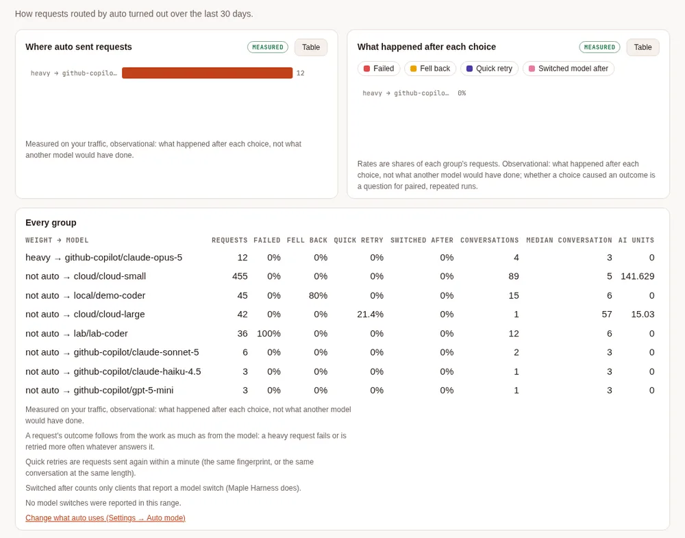
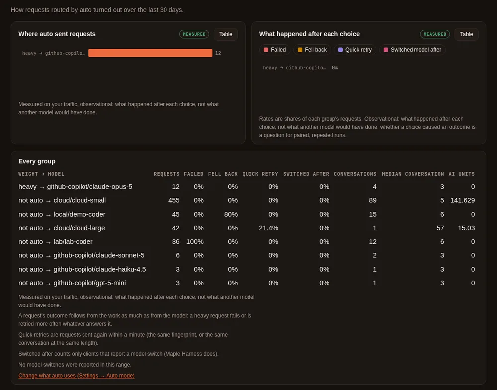
Response headers. X-Maple-Served-By names the provider and model that answered. X-Maple-Router says how a
request for auto was weighed and which name it went to and, for Copilot Auto, which models Copilot offered and
which one it chose. For a request for auto that went to the heavy weight, set to Copilot Auto as above (a demo
setup with a stand-in Copilot service), curl -si printed:
X-Maple-Prefix-Stabilized: json
X-Maple-Router: auto: heavy -> auto-heavy; copilot auto: intent chose claude-haiku-4.5; offered gpt-5-mini, claude-haiku-4.5, claude-sonnet-5
X-Maple-Served-By: github-copilot/claude-haiku-4.5A request for github-copilot/auto by name gets only the Copilot part of X-Maple-Router, and a request for
auto-light by name gets no X-Maple-Router at all. All headers are listed under
Response headers.
The usage log. requested is the name the tool asked for (auto, auto-heavy, github-copilot/auto) and
model is the model that answered, with its provider. The three requests above were recorded as:
| requested | model | provider |
|---|---|---|
auto | claude-haiku-4.5 | github-copilot |
github-copilot/auto | claude-haiku-4.5 | github-copilot |
auto-light | claude-haiku-4.5 | github-copilot |
The proxy's log. With logs on, the proxy writes one line for every request, and a request for auto gets one
more line before it with the weight it was judged to be and the name it went to:
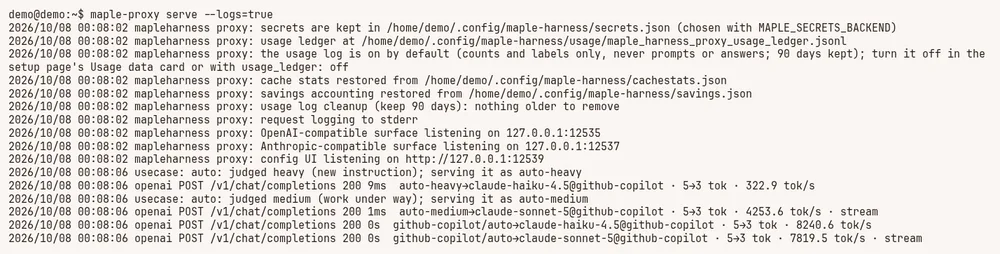
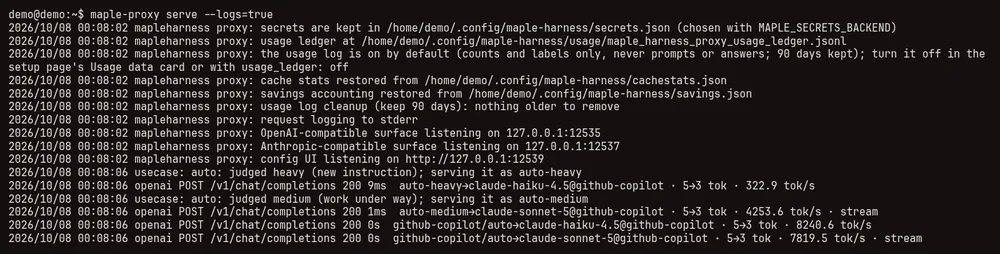
Two of those lines, as text:
2026/10/08 00:08:06 usecase: auto: judged heavy (new instruction); serving it as auto-heavy
2026/10/08 00:08:06 openai POST /v1/chat/completions 200 9ms auto-heavy→claude-haiku-4.5@github-copilot · 5→3 tok · 322.9 tok/s| Part | What it means |
|---|---|
openai | Which API the request came in on: openai or anthropic (webui for the setup page) |
POST /v1/chat/completions 200 9ms | The method, path and status, and how long the whole request took |
auto-heavy→claude-haiku-4.5@github-copilot | The name the request was served as, the model that answered, and the provider. For a request for auto the name is the weight it went to; for Copilot Auto it reads github-copilot/auto→ and the model Copilot chose. When the name is the model itself, it appears once |
5→3 tok | Prompt tokens and answer tokens, as the provider reported them |
322.9 tok/s | Answer tokens per second over the whole request |
cache partial 3584r/512w | How the provider's prompt cache did (hit, partial, miss or lost), with the tokens read from and written to it. Only when the provider reports its cache |
stream | The answer was streamed |
cancelled by caller | The tool hung up before the answer was complete |
3 tool call(s) | The answer asked for tools |
A request that fails also prints the error it was answered with, on the next line. Prompts and answers are never
written unless you add --log-bodies.
Turn the log on. It depends on how the proxy was started:
- You start it yourself:
maple-proxy serve --logs=truewrites to the terminal,maple-proxy serve --logs "$HOME/maple-proxy.log"appends to a file, and--logs=stdoutis for something else that captures output. - It runs as a service (
maple-harness service install): it already runs with--logs stdout. Read it withjournalctl --user -u maple-proxy -fon Linux, or in~/.config/maple-harness/run/maple-proxy.logon macOS. See Keep it running in the background. - Maple Harness started it for you (the default when nothing was running): set
proxy_logs: onunderharness:inconfig.yaml(or/configuration set proxy_logs on), start the agent again and type/proxy restart(other sessions on this machine share that proxy and lose it for a moment). The log is then~/.config/maple-harness/logs/proxy.log;/proxyshows where it is and/proxy logsshows its last lines. A file path in place ofonwrites there instead. See Where the harness finds the proxy.
Guards #
The Context guard (context_guard) is for tools that do not know a model's window: it sends the request as is,
drops the oldest turns until it fits, or refuses it. The Repeat guard (degenerate_guard, off by default)
stops a reply that has collapsed into repeating itself. See Guards.
Keeping the cache useful #
Two settings on the Guards card help a provider's prompt cache on long conversations: the Prefix stabiliser
(prefix_stabilizer, on by default) keeps the start of each request the same from turn to turn, and Trim old
tool results (context_trim, off by default) replaces old, large tool results with a short note. Responses say
what was done in X-Maple-Prefix-Stabilized and X-Maple-Tool-Results-Trimmed. See
Caching.
Images and browser snapshots #
Four choices on the Guards card, all off by default, shrink images and browser page snapshots before they are
sent: image_resize_tool, image_resize_user, image_superseded and snapshot_trim. Smaller images cost fewer
tokens, and small text in a screenshot may become harder to read. See
Images and browser snapshots.
Seeing how the cache is doing #
On the Cache tab, the charts show the share of input read from the cache per day, the tokens read from and
written to it, what reading from it saved and what writing to it cost (both estimated), and how each request did.
The Cache card shows today's hit rate, the tokens read from and written to the cache, a table per model and per
client, and the latest times the cache was lost, with the reason. maple-proxy cache prints the same in a terminal,
and responses that are not streamed carry X-Maple-Cache. Only counts and labels are kept, never a prompt or an
answer. To test your own account, see Check the cache yourself.
Under Why misses, by tool the card reads the usage log (the last 7 days, or the filter bar's range) and shows, for each kind of client, how often the cache missed, the most common reasons with advice for each, and an estimated cost of the misses.


Seeing cost per session #
The Sessions card groups AI units, tokens and requests by session. Maple Harness sends a random session id with
every request (X-Maple-Session), and a subagent sends its parent's id, so its spend counts toward the session that
started it. Any other client can send the header too. See What /cost tells you.
Seeing what it saves #
The Savings card, first on the page, shows what the proxy's techniques saved and what they cost, across every
session on this proxy. Every figure is tagged measured (a count, or what the provider billed) or estimated
(a value in AI units, estimated from what your own requests cost). Its headline says what the prompt cache and
trimming avoided (estimated), less Maple's own costs (extra paid for cache writes, trimming's rewrites, the
cache-warming pings it sent), beside what you spent (measured) and what you would have spent without them (the two
added up), for example "avoided an estimated 1571 AI units today …: you spent 366 (measured); without them about
1937". The net can be negative. maple-proxy savings prints the same in a terminal, and its --json has saved,
costs, net and without. Its "today" is since midnight where the proxy runs, and it adds up the same amounts each request's line in
the usage log records, so a filtered Savings card for today shows the same figures. A model whose provider does not
report cache writes (GPT models on GitHub Copilot, for one) has its cache reads valued too, once enough of its
requests have been seen; until then the card names it under Not valued yet and says why. See See and reduce what a task costs and Check it yourself.
Prices for each model #
In plain words. The Savings card puts a value on what the cache saved by learning each model's prices from your own requests. A new model has no value until it has had a few requests. If you already know a model's price, you can write it down, and the card uses it from that model's first request. Once your requests show the real price, the card switches to that, and tells you if the two differ.
The details. A model's tokens are valued with the first of these that the proxy has:
- Learned: the prices learned from that model's own requests on this proxy (as before).
- Copilot Auto's discount: GitHub Copilot bills a request through Copilot Auto at 0.9 times the same model asked for by name. A model with prices learned one way is valued the other way at once: Auto requests at 0.9 times the by-name prices, by-name requests at the Auto prices without the discount.
- Configured: the price you set for the model in
config.yaml, or in the model's ⋯ row on the Providers tab:
providers:
- id: github-copilot
type: github-copilot
models:
- id: gpt-5.3-codex
price:
unit: ai_units # ai_units (GitHub Copilot) or usd
input: 175 # per million tokens sent uncached
cached_input: 17.5 # per million tokens read from the prompt cache
output: 1400 # per million tokens generated
# cache_write: ... # per million tokens written to the cache; leave out when the provider bills noneWhat each surface does with it:
- The Savings card values a model with a configured price only in AI units (the account is kept in AI units). The price list on the card names where each model's prices came from, and the summary sentence names the models valued without prices learned from their own requests. When a learned price is more than 10% away from the one you set, the card says so and uses the learned one: either the provider's price changed, or it bills something it does not report.
- The usage log records the source on each valued request, in
price_source(learned,copilot_auto_discountorconfigured; see the usage record schema). The filtered Savings card counts the requests valued without learned prices of their own. - The cost preview in the harness uses a configured price after the learned ones. A price set in
usdcomes before the provider's published list price, since it is what you pay. The preview names the source. - The Cache card's estimates, cache warming and the model list price a token the same way as the Savings card.
Without cached_input, nothing is valued: a cache read has no price to compare with. A price is refused when the
configuration loads if cached_input is not below input, or cache_write is below input.
Daily budgets #
For each provider you can cap requests per day, AI units per day, or both (days are UTC). At the limit, requests
are refused or handed to its fallback. Key: budgets. See Budgets.
Limits and hosts (restart required) #
The rate limit (off for this machine, on for other machines by default) and allowed hosts (extra names the proxy answers to) are read when the proxy starts, so restart it after saving. The usage log, one line of counts per request, is on by default and applies as soon as you save. See Limits and hosts, The usage log and Your usage data.
If you prefer files, all of this lives in config.yaml (usually ~/.config/maple-harness/config.yaml):
model_fallbacks:
cloud: [local] # cloud and local are model aliases (see Connect a model server)
context_guard: truncate # off | truncate | error
degenerate_guard: true
budgets:
- provider: anthropic
max_requests_per_day: 150
max_ai_units_per_day: 20
server:
allowed_hosts: [my-computer.example] # this machine's Tailscale name, or another name clients use
rate_limit:
requests_per_minute: 120
burst: 20
max_concurrent: 4
usage_ledger: /data/maple/usage.jsonl # leave it out for the default place; off turns it off
usage_retention_days: 90 # days of daily files to keep; 0 keeps everythingSaving from the setup page changes only the settings you changed in config.yaml, so comments you added by hand
stay, except inside the provider list when you move a provider up or down it. Keys are never in it: they stay in your system keyring, and the file holds only a reference.
Using it from another machine #
By default only this machine can reach the model APIs. To let another machine on your network use them, set
the listen address and create an access token with the proxy scope on the setup page:
server:
openai_compat: 0.0.0.0:11535
anthropic_compat: 0.0.0.0:11537
allowed_hosts: [my-box.local] # the name other machines use to reach itThe proxy refuses to start on a non-loopback address until such a token exists, and callers send it as
Authorization: Bearer <token>. Requests from other machines are rate-limited. The setup page itself never
listens beyond this machine.
Connect the harness to a proxy #
In plain words. Maple Harness uses its own proxy on this machine, as it always has: it starts it when nothing
is running, and you set nothing. That is the normal way, also in a team: signing in to a team hub happens at your
local proxy (on its setup page, with maple-proxy chain connect --sso, or with the shortcut
maple-harness proxy connect --sso), and the harness keeps talking to your own proxy. See
Join your laptop to a team hub.
For the few places where no proxy of your own can run (a CI job, a container), there is an advanced way: point the
harness straight at another proxy with maple-harness proxy connect <address> and an access token. There is no
third way. maple-harness proxy disconnect goes back to your own proxy.
| Your own proxy (the normal way) | A proxy you connected to (advanced) | |
|---|---|---|
| What sets it | Nothing: no harness.proxy.url | harness.proxy.url, written by proxy connect |
| Started and stopped by the harness | Yes | Never: it is managed where it runs |
| How the harness knows it is the right one | Your proxy proves it is yours on every connection | Its address and its access token |
| Delegate to your local Claude | Yes | No |
auth, savings, the quota meter | Through your proxy's setup page | On the proxy's own machine |
The technical view.
- Your proxy keeps a random key in your settings folder,
local-identity.key, readable only by you. It makes it quietly on its first start. - Before the harness sends anything on a new connection to your proxy (its API address, or its setup page), it sends a one-time challenge. Your proxy answers with a signature made with that key, over the challenge and that very connection. Every later request on the connection is then known to reach your proxy.
- If what answers there cannot prove it is your proxy, see Verified and unverified proxies.
- One that passes the challenge on to your real proxy gets an answer for its own connection, which does not match. The challenge is answered only to this machine; other machines on the network get no answer at all. It works the same on Linux, macOS and Windows.
- To make a new key, delete
local-identity.keyand restart the proxy. - A proxy you connected to (advanced) is trusted by its address and its access token, with the same rules as before:
https, or plainhttpon a private network withharness.proxy.allow_insecure. Nothing is asked of it, even at a local address such ashttp://127.0.0.1:12835through a tunnel, and it never gets this machine's features. The namelocalhost(and names ending in.localhost) is always this machine: it is tried at127.0.0.1first and at[::1]only when nothing listens there, and it is never looked up in DNS. maple-harness doctorasks the same way a session does. It says nothing new when all is well.
Verified and unverified proxies #
In plain words. Maple Harness checks, every time it connects, that the proxy on this machine is your own. When it is, you see nothing: that is the normal case. When it is not (it is an older release, or it runs as another user, in a container, or with a different settings folder), the harness calls it unverified. Before a session starts or is resumed, it tells you so and asks whether to go on. If you go on:
- Tools ask before every run, in every mode, including tools your rules would normally allow; auto and yolo wait for you. The proxy writes the model's replies, and the replies decide which tools run, so a person approves each one while the proxy is not known to be yours.
- Nothing secret is sent to it: no access token, no setup-page password credential, no key for signing in. The commands that would send one say what to do instead.
- Delegate to your local Claude stays off.
What you see. Starting or resuming a session (--resume, --continue, --session, the session picker) on an
unverified proxy shows:
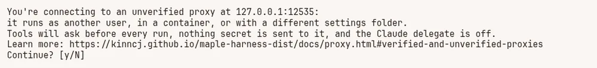
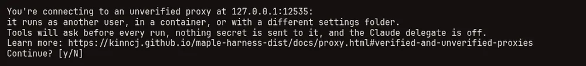
When the proxy is your own proxy program, running as you, and only older than the harness (you updated and it has not restarted yet), the question also offers to restart it:
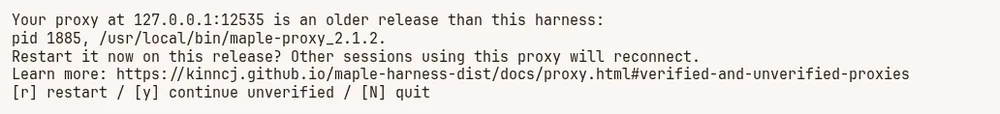
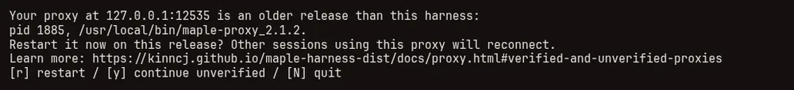
- r: the harness stops exactly that process, waits for its ports, starts this release's proxy, checks it, and the session starts verified (nothing asks more than usual). Other sessions that use the proxy reconnect by themselves. If the restart does not work, it says why and asks y/N instead.
- The restart is offered only for a process the harness can identify as yours and as a Maple proxy program (Linux and macOS). Never for another user's process, a container's port, another program, or a proxy of another identity; and not on Windows.
- N, or Enter (the default): the harness does not start, and prints the fixes below.
- y: the session starts, with tools asking, nothing secret sent, and the delegate off. The status bar says proxy unverified: tools ask for as long as that lasts.
- Where nobody can answer (
--prompt,--rpc, no terminal,serve, a session started from a phone or the gateway): the harness does not start, exits with status 1, and says why and how to fix it. It never waits for an answer (shown below). For CI jobs, see the recipes in CI jobs and containers. - If the proxy turns unverified during a session (it was replaced), the session keeps going with tools asking, and the status bar says so.
- Something that claims to be your proxy and cannot prove it is not a choice: it is refused, with "something else is
answering on
<address>, not your Maple proxy".
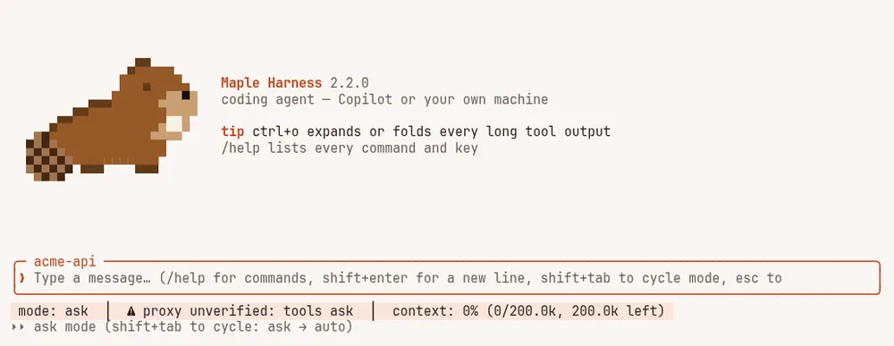
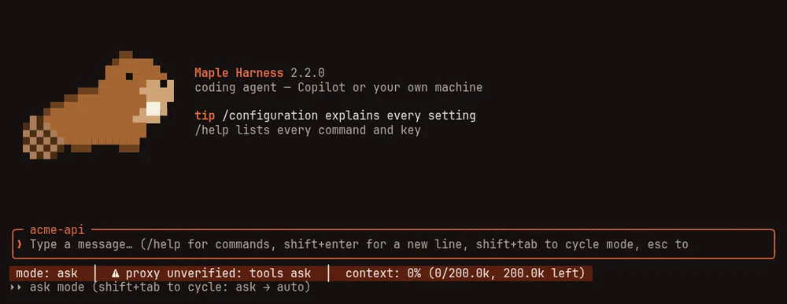
![maple-harness --prompt with no terminal, on a machine whose proxy runs with a different settings folder: You're connecting to an unverified proxy at 127.0.0.1:12535, what that means and where to learn more; then This session cannot ask you, so it did not start; to use it as your own proxy, give it this settings folder; to run with it anyway, harness.proxy.trust_unchecked: true, or MAPLE_TRUST_UNCHECKED_PROXY=1 for one run; or connect to it as a remote proxy, with its access token if it asks for one.](../img/docs/unverified-proxy-ci-light.webp)
![maple-harness --prompt with no terminal, on a machine whose proxy runs with a different settings folder: You're connecting to an unverified proxy at 127.0.0.1:12535, what that means and where to learn more; then This session cannot ask you, so it did not start; to use it as your own proxy, give it this settings folder; to run with it anyway, harness.proxy.trust_unchecked: true, or MAPLE_TRUST_UNCHECKED_PROXY=1 for one run; or connect to it as a remote proxy, with its access token if it asks for one.](../img/docs/unverified-proxy-ci-dark.webp)
How to fix it, from the most to the least common:
- Your proxy is older than the harness (you updated, and the proxy is still running the old release): restart
it with
maple-harness proxy restart(or/proxy restartin a session). A proxy the harness started itself is restarted on the new release by the harness, when it can tell for sure that it started it (it keeps a record of the process); one it did not start is never touched. - Your proxy runs with another settings folder: start it with this one (the same
XDG_CONFIG_HOME, or no--configpointing elsewhere for its settings folder), so it has your key. - Your proxy runs in a container: the harness can verify it only when the container shares this machine's
network and your settings folder, and runs as you (the key is readable only by its owner). On Linux, with Docker:
docker run -d --name maple-proxy --read-only --cap-drop ALL --security-opt no-new-privileges \ --tmpfs /tmp --network host --user "$(id -u):$(id -g)" \ -v "$HOME/.config/maple-harness:/data/config/maple-harness" \ maple-proxy:2.2.0This shares your whole settings folder with the container, sign-ins included. A container on its own network (published ports such as
-p 127.0.0.1:11535:11535) is reached through a port forward and cannot be verified; use one of the two ways below for it. - A CI job: start the proxy in the job, as the same user with the same settings folder (or let the harness start it), and nothing needs setting. Copy-paste recipes for GitHub Actions and a shell script: CI jobs and containers.
- A proxy on
127.0.0.1that needs no token, but that you choose not to share the folder with (another user's, another settings folder's, a container on the host's network): setharness.proxy.trust_unchecked: trueinconfig.yaml, orMAPLE_TRUST_UNCHECKED_PROXY=1for one run. Nothing is asked and tools run as your rules say. Nothing secret is sent to the proxy and the delegate stays off all the same, so a proxy that needs an access token (any container on its own network) is connected to withproxy connectinstead (next point).proxy statusanddoctorshow while it is on (below). - A proxy that is not yours at all (a team's, a hub, a proxy container in a CI job): connect to it the advanced
way, with
maple-harness proxy connect <address>and an access token (--token-env NAMEin a job). It is then a remote proxy, trusted by its address and token.
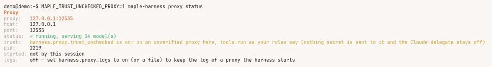
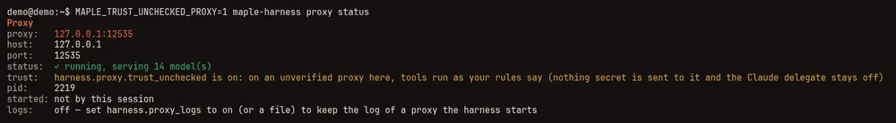
proxy status while trust_unchecked is on. A demo setup.On the proxy's setup page, Security & access, Harness connections says whether this proxy has its identity key and which settings folder holds it, and warns when harnesses on this machine may not verify it (it runs in a container, or it could not keep its key). What's configured lists it then too.
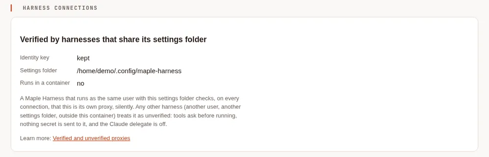
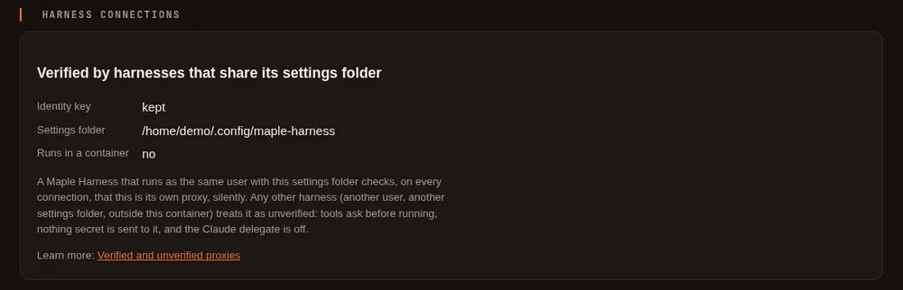
The technical view. Verified means the proxy answered a one-time challenge on that very connection with a
signature only the holder of your local-identity.key can make (see
Connect the harness to a proxy). The check is per connection, so the harness can
tell an unverified proxy apart at any time, and a proxy that proved itself earlier in the session and stops doing so
is refused as replaced.
Check the cache yourself #
Providers cache the start of a request that they have seen recently, and reading from that cache costs a fraction of processing it again. Whether that is working for your account and your model is easy to see:
maple-proxy cache probe --model gpt-5-mini --yesIt sends the same small request twice, a few seconds apart, through the running proxy, and prints what each call
reported: prompt tokens, tokens read from the cache, tokens written to it, and AI units. It says so plainly when a
model reports no cache figures, in which case the cache may not be visible from here. Without --yes it sends nothing
and only says what it would send (two requests of about 6,000 tokens, which may spend a few AI units). --tokens
changes the size (1,500 to 50,000) and --wait the pause between the two calls. Nothing it prints contains a key.
Other useful commands #
maple-proxy auth status # what is signed in
maple-proxy secrets status # where each secret is stored (never its value)
maple-proxy setup-password status # whether the setup page has a password
maple-proxy audit tail # who did what: token changes, refused requests
maple-proxy token add <label> [--person <id>] [--scope proxy|metrics] # a token, shown once
maple-proxy token list # every token's id, label, scopes and person (never the token)
maple-proxy token revoke <id> # revoke a token, and untie it from its person
maple-proxy update # install a newer release